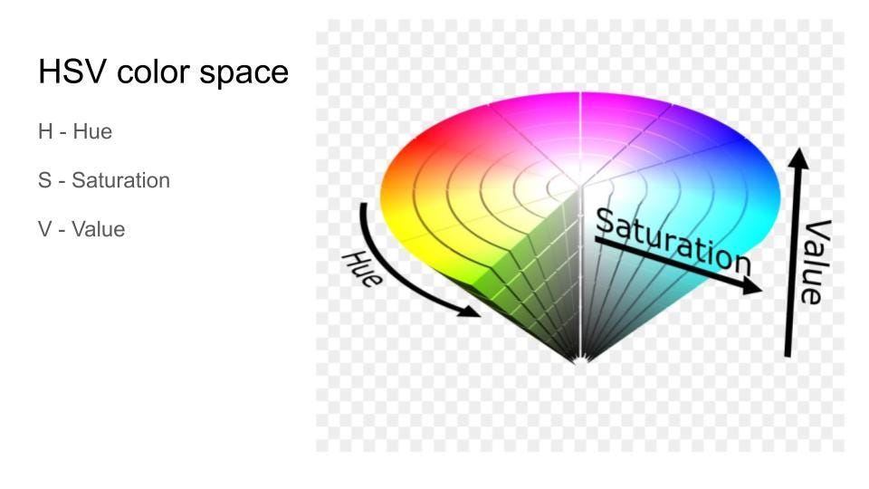

My Projects
Dubai Property Analysis
This project performs predictive analysis on property prices in Dubai, using machine learning to uncover market trends.
View Project

Color Detection
This project uses OpenCV in Python to detect colors from an image. It can identify a color on a double click and display its name.
View Project
Fake News Detection
This project uses NLP and machine learning to classify news as real or fake, built with Python, Scikit-learn, and Pandas.
View Project